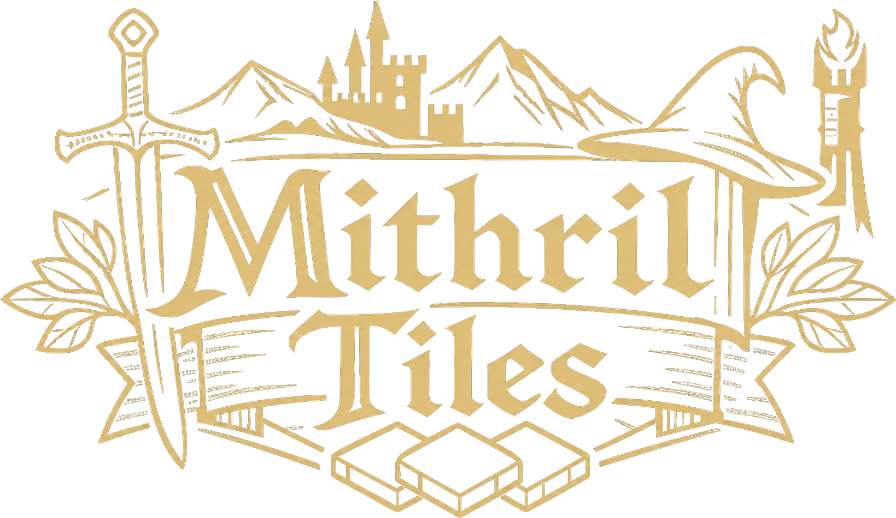
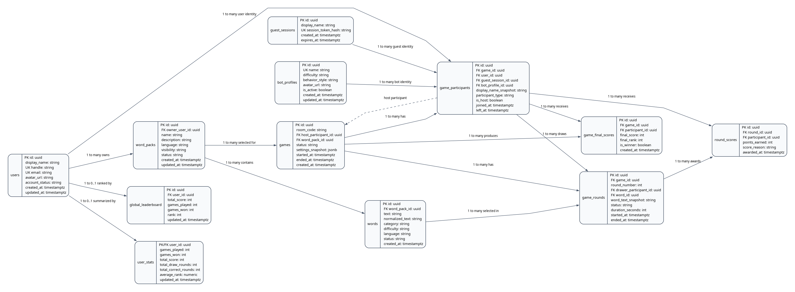

Engineering architecture portfolio

System architecture, security boundaries, realtime coordination, persistence strategy, database integrity, and deliberate scaling decisions.
A technical case study of a multiplayer drawing-and-guessing platform built with Next.js, React, Go, WebSockets, and PostgreSQL.
| Realtime coreActor-style room loops serialize concurrent gameplay commands. | Security postureHttpOnly sessions and 30-second, single-use WebSocket tickets. | Data integrityTransactions, composite keys, triggers, checks, and partial unique indexes. |
01 / Executive summary
Mithril Tiles separates fast-changing match state from durable business data while keeping the Go server authoritative over every competitive decision.
3runtime layers |
12core data entities |
30test files |
Next.js product edgeRenders the experience, validates browser inputs, proxies authenticated HTTP calls, and stores backend bearer credentials in secure HttpOnly cookies. Go authority layerOwns identity checks, authorization, origin enforcement, rate limits, room coordination, game rules, and the realtime protocol. PostgreSQL durability layerPreserves identities, catalog content, secure credentials, bot profiles, match history, rounds, awards, and final rankings. |
Decision: transient and durable state are intentionally split.Connections, timers, secret words, strokes, and chat live in memory; completed outcomes and identity data live in PostgreSQL.
Decision: each room is a serialized command processor.Typed Go channels funnel joins, guesses, strokes, lifecycle events, and bot completions through one event loop.
Decision: the browser never receives a reusable backend token.The frontend exchanges its HttpOnly session for a room-bound ticket that expires after 30 seconds and is deleted atomically when used.
Decision: database rules defend the model independently.Application validation is reinforced with constraints, transactions, composite foreign keys, triggers, and partial uniqueness.
|
Technology profile
Next.js 16React 19TypeScriptTanStack QueryZustandZodGoWebSocketsPostgreSQLpgxCanvas 2DVitest02 / System landscape
Short-lived business operations use authenticated HTTP. Latency-sensitive room traffic uses a direct WebSocket after a secure ticket exchange.
BrowserReact UI, Canvas 2D, local interaction state |
→ | Next.jspages, BFF route handlers, HttpOnly cookie |
→ | Go APIauth, rules, room actors, persistence ports |
→ | PostgreSQLdurable identities, content, outcomes |
HTTP control path
WebSocket data path
|
Why a Backend-for-Frontend?Next.js route handlers adapt browser requests to the Go API and attach bearer tokens server-side. This reduces credential exposure, centralizes browser-facing validation, and gives the UI a stable same-origin API surface. Why a direct socket?Once authenticated, the browser connects directly to the Go room server. The long-lived, bidirectional channel avoids proxying every stroke through the rendering tier while retaining strict room authorization. Why one authoritative service?Gameplay decisions and match persistence sit behind one Go boundary. This keeps rules consistent across humans and bots and prevents clients from racing independent versions of game state. |
The API composes panic recovery, trusted-origin CORS, bearer authentication, role checks, endpoint-specific rate limiting, and request deadlines. The HTTP server also defines read, write, and idle timeouts.
03 / Trust boundary
The login token stays outside browser JavaScript. A disposable, narrowly scoped credential is used for the socket upgrade.
WebSocket ticket sequence1Authenticate over HTTP. Next.js stores the backend bearer token in an HttpOnly, secure session cookie.
2Request room access. A same-origin route handler reads the cookie server-side and asks Go for a ticket.
3Issue a scoped secret. Go generates 32 cryptographically random bytes, hashes the plaintext with SHA-256, binds it to one principal and room, and gives it a 30-second TTL.
4Upgrade directly. The browser presents only the ticket to the room WebSocket endpoint.
5Consume atomically. PostgreSQL deletes and returns the matching unexpired row in a transaction. Replay attempts fail because the row no longer exists.
6Rehydrate identity. Go reloads the active user or guest principal before accepting room participation.
|
Threats addressed
Unified principal modelRegistered users and temporary guests enter domain code through one principal abstraction. Routes can require any authenticated principal, a registered user, or an administrator without duplicating identity logic. Authorization remains contextualAuthentication proves identity; room commands still verify role and state. Only the host can start a game or change bots, and only the current drawer can publish strokes. |
04 / Concurrency model
Every active room owns its match state and processes typed commands through a single select loop, turning concurrent network input into an ordered stream of decisions.
HTTP handlersstart, bots, snapshots | ↘ | Room command channelsjoin / leave / stroke / guess / start / bot completion / lifecycle |
→ | Room.Run()one ordered event loop mutates authoritative state |
→ | Public eventssnapshots, strokes, scores |
Socket clientshumans and bots | ↗ | Private eventsdrawer word, scoped errors |
State owned by each room
Bounded pressure pointsStroke, guess, bot-completion, and room-information channels use explicit buffers. Chat history uses a fixed-capacity ring buffer rather than unbounded growth. |
Race reduction by ownershipThe event loop, rather than arbitrary socket goroutines, performs lifecycle mutations. Mutexes remain around the few state regions accessed outside the loop.
Domain commands carry identityGuess and host actions include participant or principal IDs plus game/round context, so stale or forged commands can be rejected.
Slow work reports back as eventsPersistence and bot providers can execute outside the main loop, then send typed completion messages back for ordered application.
Lifecycle cancellation is explicitRound-scoped contexts stop timers and bot work when a round changes; room closure is protected by a one-time close guard.
|
05 / Realtime domain model
The room broadcasts consequences, not authority. Clients render snapshots and events but do not select the drawer, reveal the secret, award points, or advance the game.
Lobby host + roster | → | Start transaction game + participants | → | Active round draw + guess + timer | → | Round commit scores + completion | → | Finalization rankings + close |
Information partitioningDrawer: receives the private word and permission to emit normalized strokes. Guessers: receive a masked word, public strokes, timer updates, and score events. Everyone: receives membership snapshots, lifecycle state, chat history, and final standings. Protocol defensiveness
|
Late join and recoveryRoom snapshots reconstruct roster, game state, canvas revision, and scoring context. A bounded message history supplies recent chat without turning the room into an event archive. |
06 / Persistence strategy
The live room keeps ephemeral mechanics close to the game loop. PostgreSQL records the facts required for identity, administration, auditing, and completed-match history.
In-memory, by design
Reason: these values are high-frequency, round-scoped, latency-sensitive, or intentionally disposable. |
Durable, by design
Reason: these values carry product history, security meaning, content governance, or relational integrity. |
| Boundary | Atomic work | Failure behavior |
|---|---|---|
| Start game | choose word; create game; snapshot all participants; assign host and drawer; create first round | rollback leaves no partial match |
| Start round | resolve/new participants; choose a word from the game pack; create sequential round | room does not publish a false start |
| End round | complete active round; resolve principals; write score awards | round and awards commit together |
| End game | sort standings; persist final scores; mark game complete | retry policy distinguishes transient from non-retryable errors |
Raw replay streams, incorrect-guess timelines, full chat archives, and provider prompts are not stored. Adding them later should be a retention and analytics decision—not an accidental side effect of gameplay.
07 / Database architecture
Twelve related entities model identity, secure access, content, participants, rounds, awards, and final outcomes.

|
Polymorphic identities, constrainedUsers, guests, and bots share participant records, but a check constraint requires exactly the identity column matching the participant type.
Composite ownership keysForeign keys prove that drawers, score recipients, and final-score participants belong to the same game—not merely that each UUID exists.
Partial uniqueness models active stateOnly one started game per room, one started round per game, one host per game, and one outstanding ticket per principal-room pair.
|
Triggers derive denormalized integrity columnsRound word-pack and score game IDs are populated from their parents, then protected with composite constraints.
Deferred host relationship solves insertion orderThe game and its host participant are created in one transaction; a deferred foreign key validates the cycle at commit.
Domain values are checked, not impliedLifecycle states, roles, difficulties, score reasons, positive durations, nonblank names, and chronological timestamps are database rules.
|
| Deletion policy | Rationale |
|---|---|
| Game → participants, rounds, awards, finals: cascade | A match aggregate is removed as one unit. |
| Identity → tokens and socket tickets: cascade | Credentials cannot outlive their owner. |
| Word pack → words: cascade; referenced game history: protect | Catalog cleanup is allowed until durable history depends on it. |
08 / Bot architecture
Bots are first-class principals backed by persistent profiles, while provider interfaces keep game mechanics independent of any model vendor.
Bot profileidentity, difficulty, behavior style | → | Round perceptionprivate word or public masked state | → | Provider portdrawing or guessing interface | → | Domain commandsame stroke/guess path as humans |
Provider strategy
Behavior policyDifficulty and style become round-scoped controls: guess delay, attempt budget, minimum revealed letters, drawing delay, and maximum stroke count. |
No privileged scoring pathA generated guess becomes a normal typed guess command. The room validates it and awards points exactly as it would for a human.
No privileged drawing pathGenerated strokes still pass current-drawer authorization and use the normalized drawing protocol.
Cancellation follows the roundEach runtime receives a scoped context, so late provider work cannot leak into a later round.
Completion returns to the room loopAsynchronous provider output is applied only through an ordered bot-completion event.
|
| Future capability | Where it plugs in | What stays unchanged |
|---|---|---|
| new model vendor | provider adapter | room rules, scoring, protocol |
| new personality mode | bot profile + behavior policy | identity and participant schema |
| provider observability | adapter metrics/tracing | game lifecycle |
09 / Frontend architecture
The UI is not a second game engine. It validates payloads, renders authoritative events, and isolates drawing, authentication, room state, and administration into focused modules.
App routesLanding, login, registration, guest flow, room entry, live room, rules, about, and protected admin surfaces. |
Feature modulesAuthentication, drawing geometry, realtime protocol, room lifecycle, bot profiles, and word-pack management. |
State toolsTanStack Query for server/session state, Zustand for room state, React Hook Form and Zod for validated inputs. |
Realtime client lifecycleidle
→ requesting_ticket
→ connecting_socket
→ connected
→ reconnecting / failed
Connection states are explicit UI states. Ticket rejection, malformed protocol events, and socket failures surface as controlled errors rather than silent desynchronization. Responsive canvas mathPointer coordinates are normalized into a device-independent range, clamped, transmitted, and denormalized for each viewer. A stroke therefore means the same thing on different canvas sizes. |
Runtime validation at boundariesZod schemas validate authentication envelopes, room codes, ticket responses, admin forms, and structured socket events.
Server-only credential accessBrowser calls target same-origin Next.js handlers; only server code reads the session cookie and forwards bearer authorization.
Snapshot plus eventsSnapshots provide a recovery baseline; incremental events keep interaction responsive. Canvas revisions prevent stale drawing state from being trusted.
Shared error normalizationBackend validation and operational failures become a consistent browser-facing error shape.
|
10 / Reliability and evolution
The current architecture optimizes for strong single-process room consistency. Its scaling boundary is documented rather than hidden.
Defensive engineering already present
Verification profile15 Go test files cover room lifecycle, drawing authorization, guesses, message history, rate limiting, WebSocket tickets, persistence, and end-to-end API behavior. 15 frontend test files cover forms, schemas, drawing geometry, protocol parsing, room state, room entry, and shell behavior. |
Current scale boundaryActive rooms live in one Go process. Horizontal replicas would hold independent room maps and could split participants unless routing guarantees room affinity. Therefore the safe current deployment is one authoritative realtime process. Phase 1: operational hardeningAdd room/channel metrics, structured tracing, connection gauges, lifecycle latency, provider latency, and persistence retry counters.
Phase 2: room-affine scale-outPartition rooms by code with sticky routing or a gateway that consistently selects the owning node.
Phase 3: distributed ownershipIntroduce leases or a registry, a pub/sub backplane, and recoverable room snapshots only when scale justifies the consistency cost.
Phase 4: event productsAdd replay, analytics, or leaderboards through explicit event retention and aggregation—not by overloading transactional tables.
|
11 / Repository evidence map
Use this map during a technical interview or repository review to move directly from architecture decision to implementation.
| Concern | Primary evidence | What to inspect |
|---|---|---|
| System composition | cmd/api/main.go cmd/api/routes.go cmd/api/server.go | dependency wiring, middleware composition, timeouts, endpoint boundaries |
| Room actor model | internal/realtime/room.go internal/realtime/room_manager.go | typed channels, single select loop, room ownership, bounded buffers |
| Game rules | internal/realtime/handlers.go internal/realtime/game_start.go | host/drawer authorization, lifecycle transitions, scoring, private/public events |
| Secure socket entry | cmd/api/websocket.go internal/data/websocket_tickets.go | 30-second issue, SHA-256 storage, room binding, atomic consume, origin checks |
| Transactional persistence | cmd/api/game_lifecycle.go internal/realtime/gamelifecycle.go | domain port, start/round/end transactions, retry semantics |
| Database invariants | migrations/000004...000008 | checks, partial indexes, composite foreign keys, triggers, role model |
| Bot abstraction | internal/realtime/guess_provider.go internal/realtime/drawing_planner.go | provider interfaces, adapters, deterministic fallbacks |
| Credential boundary | frontend/src/lib/auth/session-cookie.ts frontend/src/app/api/ | HttpOnly storage, same-origin BFF routes, server-side bearer forwarding |
| Realtime client | frontend/src/features/realtime/ frontend/src/features/rooms/room-shell.tsx | protocol schemas, ticket lifecycle, connection states, snapshot/event rendering |
| Canvas portability | frontend/src/features/drawing/ | normalization, clamping, pointer handling, deterministic tests |
Architectural strengths
|
Interview discussion prompts
|
Prepared from the repository implementation and versioned migrations. Supporting documents: ARCHITECTURE.md and database_design.md.